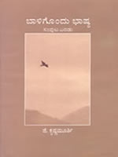
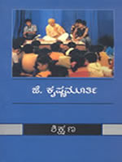
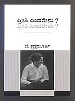
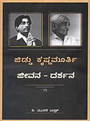
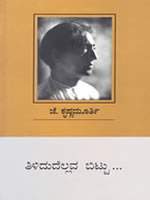

|
"The self is always limited; The self must cease through awareness of its own limitations, the falseness of its own existence. However deep, wide, and extensive it may become, the self is always limited, and until it is abandoned, the mind can never be free. The mere preception of that fact is the ending of the self, and only then is it possible for that which is the real to come into being.". |
Register |
Jiddu Krishnamurti was born on 11 May 1895 in Madanapalle, a small town in south India. He and his brother were adopted in their youth by Dr Annie Besant, then president of the Theosophical Society. Dr Besant and others proclaimed that Krishnamurti was to be a world teacher whose coming the Theosophists had predicted. To prepare the world for this coming, a world-wide organization called the Order of the Star in the East was formed and the young Krishnamurti was made its head.
In 1929, however, Krishnamurti renounced the role that he was expected to play, dissolved the Order with its huge following, and returned all the money and property that had been donated for this work. From then, for nearly sixty years until his death on 17 February 1986, he travelled throughout the world talking to large audiences and to individuals about the need for a radical change in mankind.
Krishnamurti is regarded globally as one of the greatest thinkers and religious teachers of all time. He did not expound any philosophy or religion, but rather talked of the things that concern all of us in our everyday lives, of the problems of living in modern society with its violence and corruption, of the individual's search for security and happiness, and the need for mankind to free itself from inner burdens of fear, anger, hurt, and sorrow. He explained with great precision the subtle workings of the human mind, and pointed to the need for bringing to our daily life a deeply meditative and spiritual quality.
Krishnamurti belonged to no religious organization, sect or country, nor did he subscribe to any school of political or ideological thought. On the contrary, he maintained that these are the very factors that divide human beings and bring about conflict and war. He reminded his listeners again and again that we are all human beings first and not Hindus, Muslims or Christians, that we are like the rest of humanity and are not different from one another. He asked that we tread lightly on this earth without destroying ourselves or the environment. He communicated to his listeners a deep sense of respect for nature. His teachings transcend man-made belief systems, nationalistic sentiment and sectarianism. At the same time, they give new meaning and direction to mankind's search for truth. His teaching, besides being relevant to the modern age, is timeless and universal.
Krishnamurti spoke not as a guru but as a friend, and his talks and discussions are based not on tradition-based knowledge but on his own insights into the human mind and his vision of the sacred, so he always communicates a sense of freshness and directness although the essence of his message remained unchanged over the years. When he addressed large audiences, people felt that Krishnamurti was talking to each of them personally, addressing his or her particular problem. In his private interviews, he was a compassionate teacher, listening attentively to the man or woman who came to him in sorrow, and encouraging them to heal themselves through their own understanding. Religious scholars found that his words threw new light on traditional concepts. Krishnamurti took on the challenge of modern scientists and psychologists and went with them step by step, discussed their theories and sometimes enabled them to discern the limitations of those theories. Krishnamurti left a large body of literature in the form of public talks, writings, discussions with teachers and students, with scientists and religious figures, conversations with individuals, television and radio interviews, and letters. Many of these have been published as books, and audio and video recordings.
More information about Krishnamurti’s life can be found in the biographies written by Mary Lutyens and Pupul Jayakar
The Study Centre, Bangalore at Haridvanam has been created, based on J. Krishnamurti’s vision. The Study Centre provides an atmosphere of reflection and inquiry into a deep study of the Teachings.
The Study is placed in a quiet side of the Valley, a lush green land of 100 acres. It is located 25 kilometers from Bangalore City and is a veritable oasis of beauty as are other centres of the Krishnamurti Foundation. In it, is a tranquility and silence that is conducive to an inquiring mind. Besides ‘The Study’, there is ‘The Valley School’, which is a day boarding school with 350 students.
The Study is an integral part of the Bangalore Education Centre having close links with the School. It came into existence as a Study Centre after Krishnaji's death in 1986 and now houses a library of books and several well equipped & tastefully designed rooms where one can watch videos, hold serious discussions or simply be quiet. Most of Krishnaji’s audio CDs, VCDs, and DVDs are available in the library and there are regular programmes and dialogues. There is no instructor or schedule. One may spend time in retreat or listening or sitting quietly by oneself. Regular workshops, gatherings, and seminars are arranged throughout the year.
The city of Bangalore is well connected by road, rail, and air. The climate is salubrious most of the year. The summer temperatures never exceed 37 degrees C, while in winter the mercury rarely dips below 10 degrees C. The average rainfall is 25 inches per year, usually between June and October. Hence one can be at the Study any time of the year. The study provides furnished cottages with attached bath. Food is vegetarian and guests are requested not to smoke or drink on the campus. Guests visiting here need to understand that the place exists only for serious inquiry.
The Study Centre is a religious place that is set in wilderness. Here one is not coerced to bow down to a guru or sing praise of a guru. There is no mass following and there is no pressure to imitate others. One can come to this place and be “As One Is” and make one’s own discovery of oneself. When one comes to The Study one is not told what to think or what goals to have in one’s life. Here one can explore the issues of daily living in the spirit if inquiry. Here no practices or methods are given to distract one from learning about oneself. One can come to The Study as a day visitor or take a retreat in wilderness and discover a different way of living.
"Studying means to go deeply into the subtleties of the words used and their contents and seeing the truth in them in relation to daily life." - J.Krishnamurti
To learn more about what J. Krishnamurti had to say about the Study Centre follow the following links:
The Study frequently conducts workshops and/or informal study sessions for teachers & parents of the school, monthly meetings for the general public and seminars for groups of individuals deeply interested in the teachings. It also organizes annual gatherings with the aim of bringing together people who have a common interest in understanding life's problems in the light of Krishnamurti's teachings. Aside from all this, residents & visitors to the Centre regularly sit down to have dialogues on deeper questions concerning the psychology of human mind, education, the implications of a religious life and the quest for Truth. One of the Centre's primary functions is to help with the dissemination work of Krishnamurti's teachings. This happens mainly through distribution of Krishnamurti's books, sale of a limited number of pre-recorded audio and video tapes, participation in book fairs & exhibitions, and holding of gatherings and public meetings in various towns, cities of Karnataka. There is also a Translation Cell that is actively involved in translating Krishnamurti's English books into the Kannada language. This Cell also brings out a quarterly Kannada newsletter called "Sahapayana" which has articles, quotes and all the latest news & announcements concerning the BEC and KFI.
|
The Study Centre, Valley School, Bangalore will be offering residential retreats every month. The purpose of such retreats is to take a step back from ones active daily life of making a living, having a family, and all the other activities that one is engaged in. During the retreat one can be alone and also in company of other serious minded individuals who have deeper questions of life and are willing to delve into the nature of human consciousness without any preconditions or with the aim of reaching any specific goal. Taking a journey within oneself brings about a certain release from the various conclusions, ideas, and tensions that one often accumulates in daily life. After the retreat one returns to daily living with an alert mind that is able to meet afresh the challenges of life. Attending the retreat allows a teacher or parent to learn the intention of the school. The educational philosophy of the school helps in bringing about various policies and curriculum design in the school. Intention of the Retreat at The Study, KFI, Bangalore
The retreats start on Thursday evening and end on Sunday evening, so that people who are working have to take only one day off. Transportation will be arranged for group pick-up from Jain Temple, 4th Block, Jayanagar, Bangalore. The time of pick-up will be 6:30 PM on the first day of retreat. The time of departure will be 5:00 PM on the last day of the retreat from the campus. The Study Retreat will be restricted to twelve participants. Each participant will have a single cottage on a non-sharing basis. Participants for the group retreats are encouraged to register early for single occupancy cottage accommodation. The suggested contribution for the study retreat to cover the cost of food, lodging, programs, study material, and group transportation is Rs. 3500 (individual) per person. Please fill up the registration form and send it to the Study Centre, Bangalore. Few cottages will be available for double occupancy. The suggested contribution for the study retreat is Rs. 2800 (twin-sharing) per person. Group retreats will be for 12-18 participants (individual/ shared accommodation option). Vegetarian food will be served. Smoking, alcohol or drugs are strictly prohibited. Participants can extend their stay before or after the retreat on the basis of additional payment. We recommend that the participants extend the retreat for one to three days after the group retreat gets over. This will give participants a chance to absorb the questions raised during the retreat, so that the insights can percolate in the deeper layers of consciousness. The transportation for all the programs is arranged for one pickup and drop to the city in a group. The time will be specified to the participants in the acknowledgement email before the event. |
Scheduled Group Retreats (Paid)
Mode of Payment
First Sunday Meetings (Free)
Meetings are organized for people interested in Krishnaji’s Teachings living in Bangalore. The meeting is held on First Sunday of every month from 9:30 AM to 1:30 PM at the Valley School campus. The half a day session includes Krishnamurti video session and dialogue. Guest speakers are invited. Free transport and lunch is arranged for all the participants. The session starts with an introduction of a theme either by one of the staff members or a guest followed with Dialogue. After tea break, we watch a video of J.Krishnamurti’s talk. ** Participants in Retreat for Young will be staying on a sharing basis in various rooms on the campus. |
The Study CenterValley School campus, 17th Km Kanakpura Rd, Thatguni Post, Bangalore – 560062, India First Sunday Meeting: Bus Route |
Directions to the Study Centre, BangaloreThe Study Centre is located on the same campus as The Valley School. Coming on Kanakpura Road go pass the Saraki Signal and then go pass Konankonte Cross (landmark Metro Store). Then pass Talghatpura Police Station and NICE Road (peripheral Road – overhead bridge). Stay on Kanakpura Road. On the left you will see Silk Farm. This is 12 km from Saraki Signal. On the right side near a Banyan tree there is a road that goes on the right side. Here is a sign in yellow for The Valley School. Come straight to the school gate (without making any turns). The school gate is 2km from the Silk Farm. Ask the security for directions for the Study Centre. Directions from Bangalore Central & Majestic Bus Stand on local buses
Please check timings of the buses on the internet or the bus stand. If you reach Silk Farm between 9AM and 3PM – you can call the school office number 080.2843.5240 and request a pick-up from the Silk Farm if the driver is available. You can also inform Study Centre office 080.2843.5243 about your arrival. |
|
|
Commentaries on Living Second Series
Title: Baligondu Bhashya 2nd series Translator: Dr. Mahabaleshwar Rao (300 pages; Price: Rs 150/-) The "Baligondu Bhashya" series represents an entirely new genre of writing - a blend of lyrical descriptions of nature, philosophical reflections and psychological insights, all informed by a deeply religious sensibility and couched in lucid, absorbing prose. The second book in this series deals with a wide range of topics such as - boredom, conditioning, conformity, desire, fear, karma, the 'I', death, freedom, meditation and "an immensity that was aware of itself without measure". In these dialogues, the ways of the self are unravelled through Krishnamurti's probing intelligence.  |
Krishnamurti on Education
Title: Shikshana 2nd Edition Translator: Shri S.T. Kashikar (158 pages; Price: Rs 90/-) This book is the outcome of talks and discussions held by J.Krishnamurti with the students and teachers of Rishi Valley School, Andhra Pradesh and Rajghat Besant School, Varanasi. Krishnamurti regards education as of prime significance in the communication of that which is central to the transformation of the human mind and the creation of a new culture. As the topics in these stimulating talks & dialogues reveal, he questions the very roots of our culture so that a comprehensive view on education emerges.  |
|
Life Ahead
Title: Preethi Endarenu? Translator: Prof. Nagabhushan Swamy Chapters 8-10; 31 pages; Price: Rs 25/-) "Preethi Endarenu?" is a translation of chapters 8-10 of the book "Life Ahead" by J.Krishnamurti. The book covers a wide range of themes - sorrow, misery, social work, economic inequalities, rituals, prayer, pride, vanity, egotism, the art of listening, the importance of understanding the mind and the meaning of love. Education is central to Krishnamurti's vision of life, and Life Ahead is the first collection of his talks to students, teachers and parents.  |
J.Krishnamurti: Biography
Title: Jiddu Krishnamurti: Jeevana - Darshana Author: Dr.N. Murari Ballal (242 pages; Price: Rs 130/-) This is the first ever biography on J.Krishnamurti to be published in the Kannada language. Written with a lot of grace and poetry, it brings out many interesting facts concerning Krishnaji's life as an immensely popular public speaker, educator, philosopher and an extraordinary religious teacher. This was also to be the last book by the well-known economist and environmentalist, the Late Dr.N.Murari Ballal, who not only was a compassionate human being deeply concerned about our environment, but also, an extremely devoted student of Krishnaji's teachings - teachings that point to a reality beyond delusive notions of freedom and psychological entrapments of the ego or self. It will soon become obvious to the reader that this book has been completed with great care, dedication and sensitivity.  |
|
Freedom from the Known
Title: Tilidudellava Bittu Translator: Prof.G. Venkatasubbiah (136 pages; Price: Rs 90/-) First published in English in 1969 as "Freedom from the known", this popular Krishnamurti book deals with such diverse topics as awareness, conditioning, consciousness, death, fear, freedom, knowledge, God, love & meditation. In this book, the reader will also find a clear explanation of the assertion- "the observer is the observed", which Krishnamurti considered to be the essential core of the teachings.  |
|
The Study Centre, Valley School, Bangalore will be offering residential retreats every month. The purpose of such retreats is to take a step back from ones active daily life of making a living, having a family, and all the other activities that one is engaged in. During the retreat one can be alone and also in company of other serious minded individuals who have deeper questions of life and are willing to delve into the nature of human consciousness without any preconditions or with the aim of reaching any specific goal. Taking a journey within oneself brings about a certain release from the various conclusions, ideas, and tensions that one often accumulates in daily life. After the retreat one returns to daily living with an alert mind that is able to meet afresh the challenges of life. Attending the retreat allows a teacher or parent to learn the intention of the school. The educational philosophy of the school helps in bringing about various policies and curriculum design in the school. The retreats start on Thursday evening and end on Sunday evening, so that people who are working have to take only one day off. Transportation will be arranged for group pick-up from Jain Temple, 4th Block, Jayanagar, Bangalore. The time of pick-up will be 6:30 PM on the first day of retreat. The time of departure will be 5:00 PM on the last day of the retreat from the campus. The Study Retreat will be restricted to twelve participants. Each participant will have a single cottage on a non-sharing basis. Participants for the group retreats are encouraged to register early for single occupancy cottage accommodation. The suggested contribution for the study retreat to cover the cost of food, lodging, programs, study material, and group transportation is Rs. 3500 (individual) per person. Please fill up the registration form and send it to the Study Centre, Bangalore. Few cottages will be available for double occupancy. The suggested contribution for the study retreat is Rs. 2800 (twin-sharing) per person. Group retreats will be for 12-18 participants (individual or shared accommodation option). Vegetarian food will be served. Smoking, alcohol or drugs are strictly prohibited. Participants can extend their stay before or after the retreat on the basis of additional payment. We recommend that the participants extend the retreat for one to three days after the group retreat gets over. This will give participants a chance to absorb the questions raised during the retreat, so that the insights can percolate in the deeper layers of consciousness. The transportation for all the programs is arranged for one pickup and drop to the city in a group. The time will be specified to the participants in the acknowledgement email before the event. What to bring when you come on retreat
Mode of Payment
|
Scheduled Group Retreats (Paid)
Bank Transfer details:
|